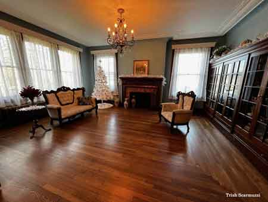
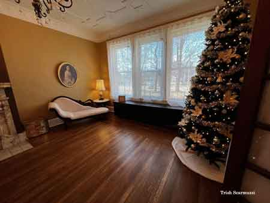
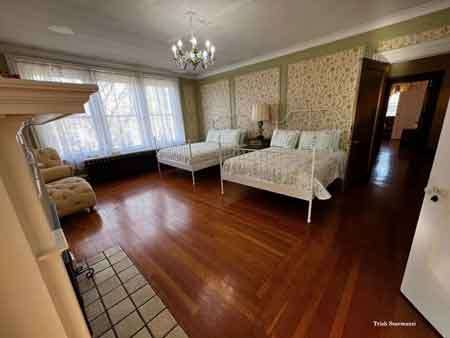
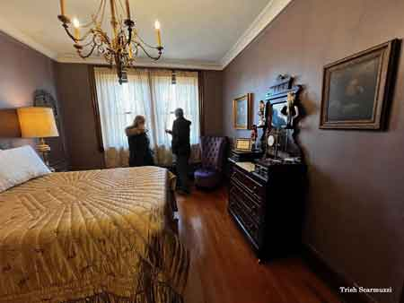
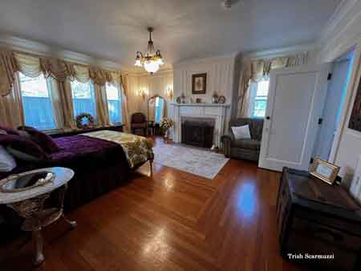
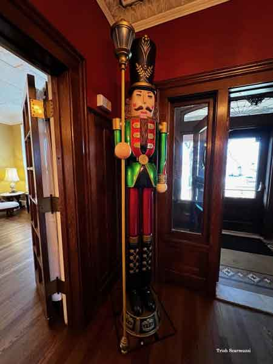
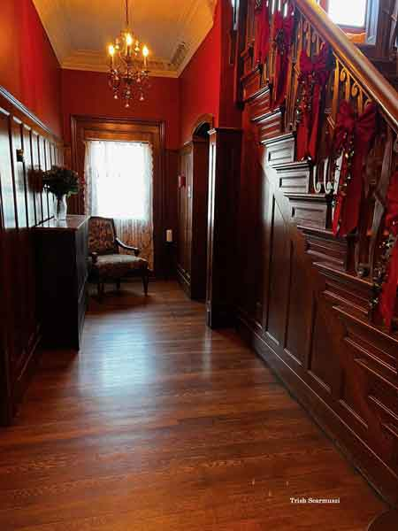
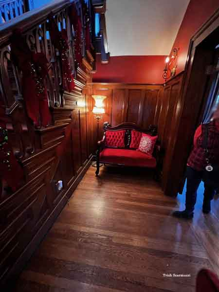

Clingan-Waddell Mansion

Clingan-Waddell mansion built in 1915

Margaretta Thomas.

Portrait of Jacob Waddell, well-known industrialist and husband of Mary Ann Thomas. CA 1929

Pictured left is the Dr. Thomas Clingan house built in 1905 close to the Mahoning River and was later inundated by the waters of the 1913 Flood.

Dr. Thomas O. Clingan

Studio portrait of Mrs. Jacob Waddell nee Mary Ann Thomas.

Studio portrait of Mrs. T.O. Clingan nee Margaretta Thomas.

John R. Thomas

Photo taken 1936.

Photo taken May 18, 1949 celebrating the eightieth birthday of Margaretta Clingan.

Aerial view of the land donated to the City of Niles, this would become Waddell Park.

The original Niles Swimming Pool was also known as Waddell Pool, named after its benefactors, which was built as a WPA project during the Great Depression.

View of the pool area showing the diving boards, fountains and wading pool.

Addition built in 1964 for the YMCA.

Garage showing the tile roof.

View of cut stone and brickwork.

Arch over front entrance with cut glass.

Mosaic tile floor inside front entrance.

Front entrance chandelier.

Grand stairway to the second floor.

View of grand stairway from landing.

Cut glass windows at the top of the first floor stairway landing.

Details of newel posts.

Details of newel posts.

Third floor stairway and railing.

Detail of oak flooring showing corner pattern.

Pictured above is the formal dining room with marble fireplace mantel.

Ceiling detail in the formal dining room.

Living room ceiling detail.

Marble fireplace in living room.

Close-up of marble fireplace.

Detail of fireplace mantel.

Second floor fireplace.
{kind=link}

Interior views of the refurbished von Isley house
{kind=link}

Interior views of the refurbished von Isley house

Interior views of the refurbished von Isley house

Interior views of the refurbished von Isley house
{kind=link}

Interior views of the refurbished von Isley house
{kind=link}

Interior views of the refurbished von Isley house
{kind=link}

Interior views of the refurbished von Isley house

Interior views of the refurbished von Isley house

Interior views of the refurbished von Isley house
{kind=link}

Interior views of the refurbished von Isley house

Interior views of the refurbished von Isley house
{kind=link}

Interior views of the refurbished von Isley house

Interior views of the refurbished von Isley house
{kind=link}

Interior views of the refurbished von Isley house

Interior views of the refurbished von Isley house

Interior views of the refurbished von Isley house